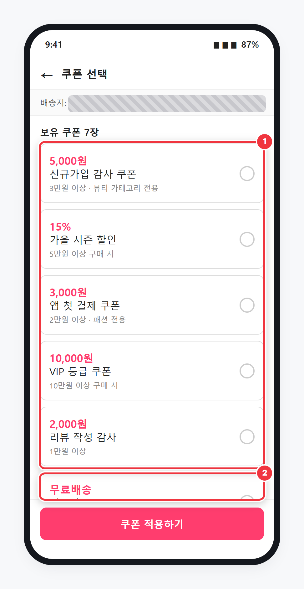
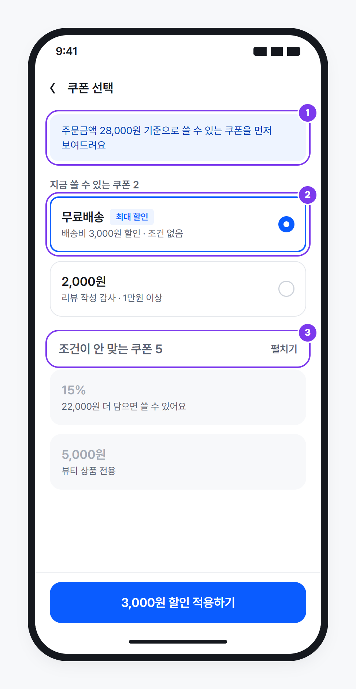

쓸 수 있는 쿠폰은 왜 맨 아래에 있을까
쇼핑몰A (가상 앱) · 장바구니 › 결제 › 쿠폰 선택
BEFORE

AFTER

1
쓸 수 있는지 하나씩 읽어야 함
7장이 같은 모양으로 섞여 있고, 조건은 작은 회색 글씨
2
제일 이득인 쿠폰이 가려짐
무료배송 쿠폰이 맨 아래, 하단 버튼에 반쯤 가려짐
1
주문금액 기준으로 나눔
지금 장바구니로 쓸 수 있는지 앱이 먼저 판단
2
최대 할인 자동 선택
버튼에 할인 금액까지 표시
3
못 쓰는 쿠폰은 접고 이유 표시
"22,000원 더 담으면" 같은 다음 행동 안내